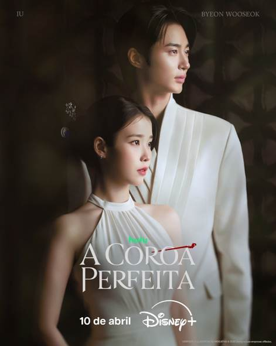

Romance
Se a Vida Te Der Tangerinas...
Ambientado na encantadora ilha de Ilha de Jeju, o dorama acompanha a vida de Ae-sun, uma jovem rebelde, sonhadora e cheia de personalidade, que deseja se tornar poetisa mesmo enfrentando dificuldades desde cedo. Ao seu lado está Gwan-sik, um homem reservado, leal e trabalhador, que a ama profundamente, embora tenha dificuldade em expressar seus sentimentos. A história percorre diferentes fases da vida dos dois, mostrando seus desafios, sacrifícios, conquistas e um romance intenso que atravessa o tempo. Entre momentos de alegria, dor e superação, o dorama revela como o amor, a família e as escolhas moldam quem nos tornamos. Mais do que um simples romance, Se a Vida Te Der Tangerinas é uma jornada emocional sobre crescer, persistir e encontrar beleza mesmo nas dificuldades da vida.

A Coroa Perfeita
Ela tem tudo… menos o que mais quer. Ele tem o que todos desejam… mas não pode viver. Em uma Coreia do Sul moderna onde a monarquia ainda dita regras, Seong Hui-ju (IU) é uma herdeira chaebol determinada a conquistar o status que o dinheiro não compra. Do outro lado, o príncipe Yi An (Byeon Woo-seok) vive preso a uma vida sem escolhas, carregando o peso de um título que mais parece uma prisão. Quando os dois entram em um casamento por contrato, o que começa como um acordo estratégico logo se transforma em algo muito mais profundo. Entre jogos de poder, aparências e expectativas da realeza… surge um sentimento que nenhum dos dois estava preparado para enfrentar.

Beleza Verdadeira
“Beleza Verdadeira” acompanha a história de Lim Ju-kyung, uma jovem que sofre com inseguranças por não se encaixar nos padrões de beleza. Após aprender técnicas de maquiagem através de tutoriais online, ela transforma completamente sua aparência e passa a viver uma nova realidade na escola, sendo admirada por todos. No entanto, por trás da aparência perfeita, existe o medo constante de que descubram seu “verdadeiro” rosto. Entre amizades, romances e desafios, Ju-kyung conhece pessoas que enxergam além da aparência, especialmente Lee Su-ho e Han Seo-jun, que carregam suas próprias dores e segredos. Ao longo da história, ela aprende que a verdadeira beleza vai muito além da estética, envolvendo autoestima, aceitação e autenticidade.

Rainha das Lágrimas
“Rainha das Lágrimas” conta a história de Hong Hae-in, uma herdeira fria e poderosa de um grande império empresarial, e Baek Hyun-woo, um advogado brilhante de origem humilde. Casados há anos, o relacionamento dos dois está à beira do colapso, marcado por diferenças, mágoas e a distância emocional. Quando uma crise inesperada abala suas vidas, eles são obrigados a enfrentar seus sentimentos e revisitar o passado que os uniu. Em meio a conflitos familiares, disputas pelo poder e segredos revelados, o casal redescobre o amor que parecia perdido. A história mistura romance, drama e superação, mostrando que mesmo nos momentos mais difíceis, o amor pode renascer — trazendo lágrimas, mas também esperança.